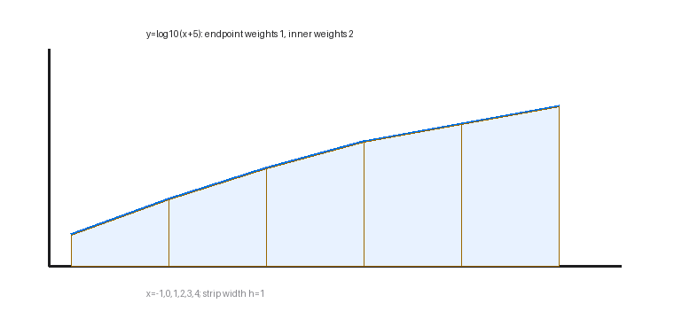

In this question you must show all stages of your working. Solutions relying entirely on calculator technology are not acceptable.
(i) The table below shows values of $x$ and $y$, where $y=\log_{10}(x+5)$, for $x$ values between $-1$ and $4$.
$x$ $-1$ $0$ $1$ $2$ $3$ $4$ $y$ $\log_{10}4$ $\log_{10}5$ $\log_{10}6$ $\log_{10}7$ $\log_{10}8$ $\log_{10}9$ Using the trapezium rule with all the $y$ values in the given table, show that $\int_{-1}^{4}\log_{10}(x+5)\,dx\approx\log_{10}k$, where $k$ is an integer to be found. (3)
(ii) Find the value of $a$ such that $2\log_5(5-a)-\log_5(a+25)=1$. (5)
Status: completed live and refined. Part (i) needed the leading half absorbed; part (ii) needed a strict-domain rejection.
[8 marks: (i) 3, (ii) 5]
Strategy. Apply the trapezium rule with strip width 1, keeping endpoint weights 1 and interior weights 2. Convert the weighted sum of logarithms into one logarithm, then absorb the outer factor $1/2$ as a square root to reach the required $\log_{10}k$ form.
Why this method applies. The table has six ordinates across five equal intervals from $-1$ to 4, so $h=1$. Log laws convert addition into multiplication and coefficients into powers. The source asks for an integer $k$, so the outer half must be incorporated rather than left in front of the logarithm.
Formula or definition first. Trapezium rule: $\frac h2[y_0+y_5+2(y_1+y_2+y_3+y_4)]$. Log laws: $\log u+\log v=\log(uv)$ and $c\log u=\log(u^c)$.
Full intermediate derivation. Substitute $h=1$: $\frac12\{\log4+\log9+2(\log5+\log6+\log7+\log8)\}$. Combine: $\frac12\log[4\cdot9\cdot(5\cdot6\cdot7\cdot8)^2]$. Since $5\cdot6\cdot7\cdot8=1680$, this is $\log\sqrt{36\cdot1680^2}=\log(6\cdot1680)=\log(10080)$. Hence $\boxed{k=10080}$.
Difficult transition. The difficult transition is $\frac12\log N=\log(N^{1/2})$, not $\log(N/2)$. Because $4\cdot9=36$ is a perfect square and the interior product is squared, the square root becomes the integer $6\cdot1680$.

Check back / sense check. Expand the final log backward: $\log10080=\log(6\cdot1680)$. Squaring its argument gives $36\cdot1680^2$, exactly the product inside the half-log. The positive function and positive $k$ are also consistent.
Strategy. Write the natural domain before combining logs, apply power and quotient laws, convert the logarithmic equation into an algebraic equation, solve the quadratic, and reject any root that violates either original log argument.
Why this method applies. Logarithms require positive arguments. Combining $2\log_5(5-a)$ into $\log_5(5-a)^2$ loses the sign information carried by $5-a>0$, so the domain must be retained separately and re-imposed after solving.
Formula or definition first. Domain: $5-a>0$ and $a+25>0$, so $-25<a<5$. Log laws give $\log_5\frac{(5-a)^2}{a+25}=1$. Since $\log_5 X=1$ means $X=5$, use $(5-a)^2=5(a+25)$.
Full intermediate derivation. Expand: $a^2-10a+25=5a+125$. Rearrange: $a^2-15a-100=0$. Factor: $(a-20)(a+5)=0$, so candidates are $a=20$ and $a=-5$. Apply $-25<a<5$: reject 20 and retain $\boxed{a=-5}$.
Difficult transition. The square makes both positive and negative values of $5-a$ produce the same algebraic value, so the transformed quadratic admits a root outside the original equation. The strict inequalities must be written, not replaced by a vague ‘one root invalid’ statement.
Check back / sense check. Substitute $a=-5$: $2\log_5(10)-\log_5(20)=\log_5(100/20)=\log_55=1$. Substitute $a=20$ and the first logarithm is undefined, confirming the rejection.